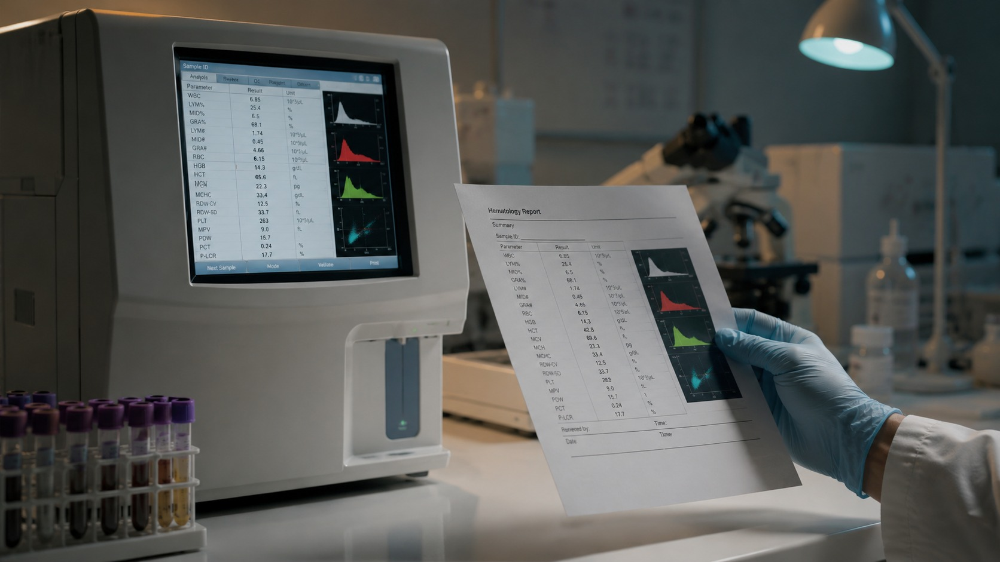
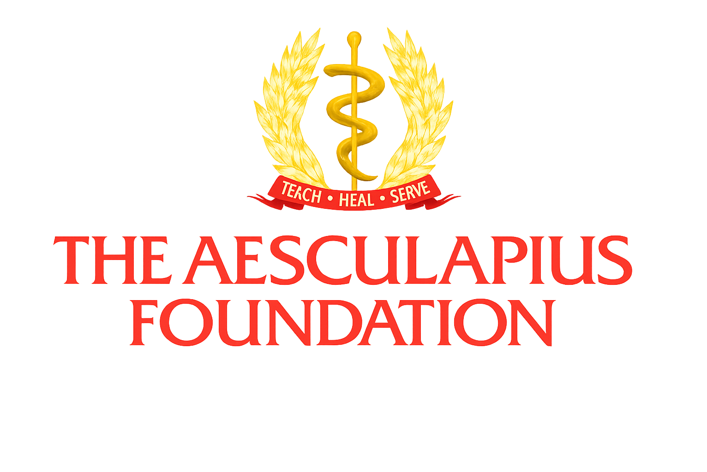
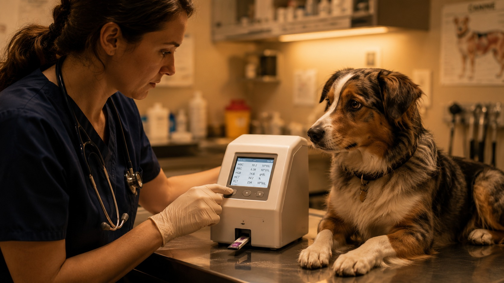
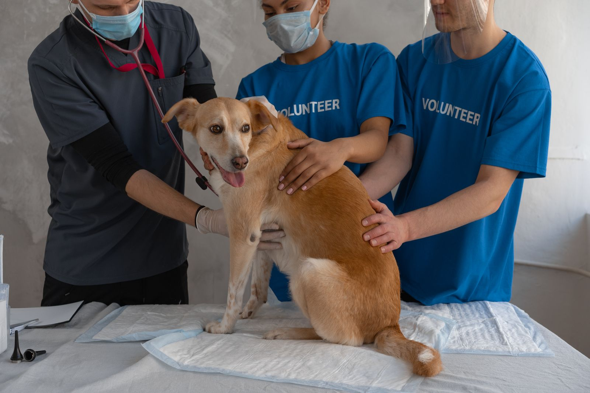
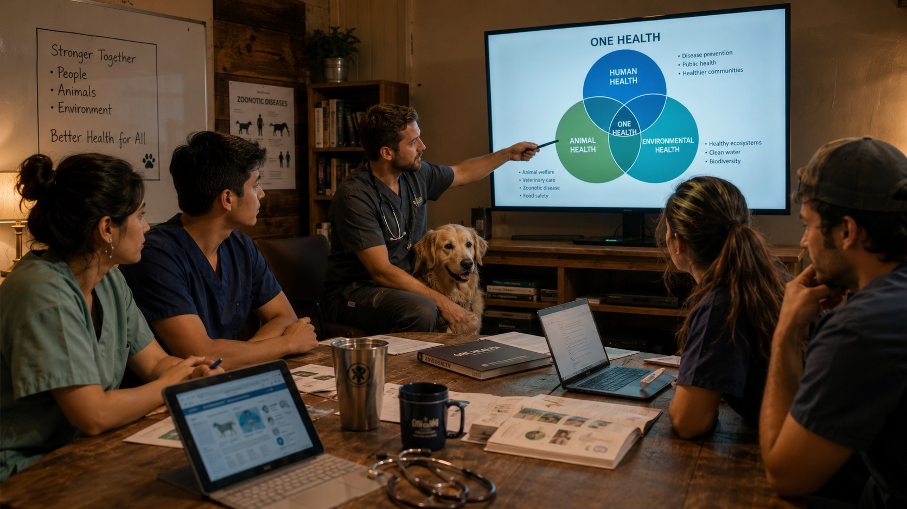

Independent Diagnostic Validation
Training, learning resources, and practical guidance that help veterinary and healthcare learners understand diagnostics, interpretation, workflow, and clinical value.

Advancing One Health education, veterinary diagnostic literacy, and infectious disease preparedness.
The Aesculapius Foundation helps veterinary professionals, animal health workers, students, farms, shelters, caregivers, and communities use reliable knowledge and evidence-informed diagnostics to improve outcomes, reduce avoidable costs, and protect human, animal, and environmental health.
We support education, independent validation, surveillance readiness, and access-focused initiatives that help professionals and communities detect disease earlier, make better-informed decisions, reduce barriers to quality care, and respond to animal and public health threats.

Training, learning resources, and practical guidance that help veterinary and healthcare learners understand diagnostics, interpretation, workflow, and clinical value.

One Health education and preparedness initiatives focused on early detection, zoonotic risk awareness, infectious disease response, and animal health surveillance.

Non-commercial evaluation of diagnostic tools, consumables, workflows, and access-enabling technologies in real-world veterinary care settings.

Programs that help shelters, rural practices, farms, high-volume low-cost clinics, and animal owners access reliable information and reduce avoidable expense.
The Foundation has prior experience developing independent medical education and CME-related programming with accredited providers, faculty experts, and healthcare-sector partners. Its renewed work focuses on high-need areas where education and independent information can produce measurable value: diagnostic literacy, infectious disease preparedness, animal health surveillance, and access to quality care.
Better health outcomes begin with earlier detection and better decisions. Independent education and validation can help practices, farms, shelters, and communities avoid poor purchasing decisions, reduce unnecessary testing and delays, and strengthen care capacity in cost-sensitive settings.
Your support helps fund educational resources, independent validation studies, infectious disease preparedness initiatives, and access programs for veterinary practices, farms, shelters, students, caregivers, and communities.